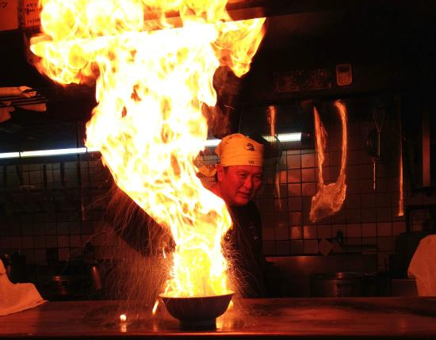

Explorez Kyoto
Les revenus influencent le choix des expériences présentées sur cette page : en savoir plus.
.jpg)

Un portail vers le passé du Japon, empli de sites inscrits au patrimoine mondial et d'arts traditionnels
Les lieux saints et les temples de Kyoto forment un pont inhabituel entre la modernité de la ville et son passé ancestral. Le sanctuaire de Shimogamo date du VIe siècle et il semble avoir été arrêté dans le temps ; on ressent encore le calme et l'énergie spirituelle qu'il dégage. Visitez le sanctuaire Fushimi Inari, puis inclinez-vous devant les 1000 statues grandeur nature du Sanjūsangen-dō. Assistez aux danses traditionnelles des geishas, puis savourez tranquillement un bon repas dans un restaurant surplombant la rivière Kamo (littéralement, la rivière aux canards).

Kyoto : les immanquables
Se divertir
Des lieux à voir, des rues à explorer et des expériences emblématiques à Kyoto.
Tout afficher
Kikunoi
302
€€€€ • Japonaise, Asiatique, Cuisine de Kyoto
Tajimaya Shijo Kawaramachi
1 556
€€€€ • Japonaise, Asiatique
Fire Ramen Kyoto - Menbaka
1 071
€€€€ • Japonaise
Saryo Tsujiri Gion Honten
273
€€€€ • Japonaise, Café
Steak House Pound Shijo Kawaramachi
892
€€€€ • Japonaise, Steakhouse, Grillades
Burger Revolution Kyoto
195
€€€€ • Américaine, Restauration rapide, Grillades
Wagyu Ryotei Bungo Gion
298
€€€€ • Japonaise, Kaiseki, Kappo